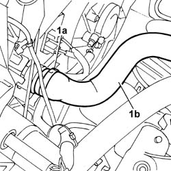
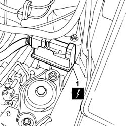
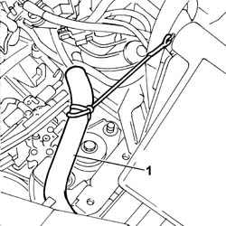
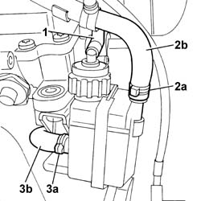
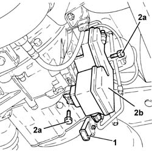

2127C12 hydraulic gear selection fluid reservoir - r r
- Path
- Procedures > 21 GEARBOX UNIT > 2127 ELECTRO-HYDRAULIC SELECTION. GEARBOX EXTERNAL. CONTROLS > 2127C hydraulic gear selection system > 2127C12 hydraulic gear selection fluid reservoir - r r
- Kind
- repair procedure (removal / refitting; the operation number is the code)
- Applies to
- engines: 1.2 8v; all production periods
- Interactive page
- https://sloeber94.github.io/elrnDB-fPnd/en/#/2752676
Applies to: engines: 1.2 8v; all production periods
 Removing
Removing
 Refitting
RefittingPosition the vehicle on the ramp.
Connect the Examiner and carry out the procedure to depressurise the gear actuation hydraulic circuit.
To ensure depressurisation is successful, ensure:
there are no errors
the brake pedal is maintained depressed
5530B56 BATTERY DRIP TRAY COVER - R.R.
5530B52 Battery DRIP TRAY/SUPPORT - R.R.
Position a suitable container to collect the coolant.
1. Open the retaining band (1a) and disconnect the pipe (1b), radiator side.
Move the pipe away from the work area.

Applies to: engines: 1.2 8v; all production periods
1. Disconnect the electrical connection for the braking system control unit.
 | Name | Connector |
|---|---|---|
1 | Braking system control unit | M51 |

Applies to: engines: 1.2 8v; all production periods
1. Move the front wiring section away from the work area.

Applies to: engines: 1.2 8v; all production periods
1. Disconnect the breather pipe on the reservoir cap.
2. Open the retaining band (2a) and disconnect the low-pressure return pipe (2b) to the reservoir.
3. Open the band (3b) and disconnect the fluid recovery pipe (3b).

Applies to: engines: 1.2 8v; all production periods
1. Release the pump electrical connection from its seating on the reservoir.
2. Undo the bolts (2a) and remove the electrohydraulic gear selection hydraulic system fluid reservoir (2b).

Applies to: engines: 1.2 8v; all production periods
Refitting
RemovingPlace the electro-hydraulic selection gearbox hydraulic circuit fluid reservoir back in its housing and secure it with bolts.
Secure the pump electrical connection in its seating on the reservoir.
Connect the fluid recovery pipe and secure it with the retaining band.
Connect the low-pressure fluid return pipe to the reservoir and secure it with the retaining band.
Connect the breather pipe on the reservoir cap.
Refit the front wiring section.
Connect the electrical connection of the braking system control unit.
| Name | Connector |
|---|---|---|
- | Braking system control unit | M51 |
Connect the pipe from radiataor to engine, radiator side, and secure with the retaining band.
0010T21 coolant check density and top up if necessary
0010T48 hydraulic system for gearbox with hydraulic selection bleed air
5530B52 Battery DRIP TRAY/SUPPORT - R.R.
5530B56 BATTERY DRIP TRAY COVER - R.R.
Remove the vehicle from the lift.
Topics linked from this page (6)
- 0010T21 coolant check density and top up if necessary
- 0010T47 hydraulic system fluid for gearbox with hydraulic selection check level and top up if necessary
- 0010T48 hydraulic system for gearbox with hydraulic selection bleed air
- 5530B10 battery - r+r
- 5530B52 Battery DRIP TRAY/SUPPORT - R.R.
- 5530B56 BATTERY DRIP TRAY COVER - R.R.